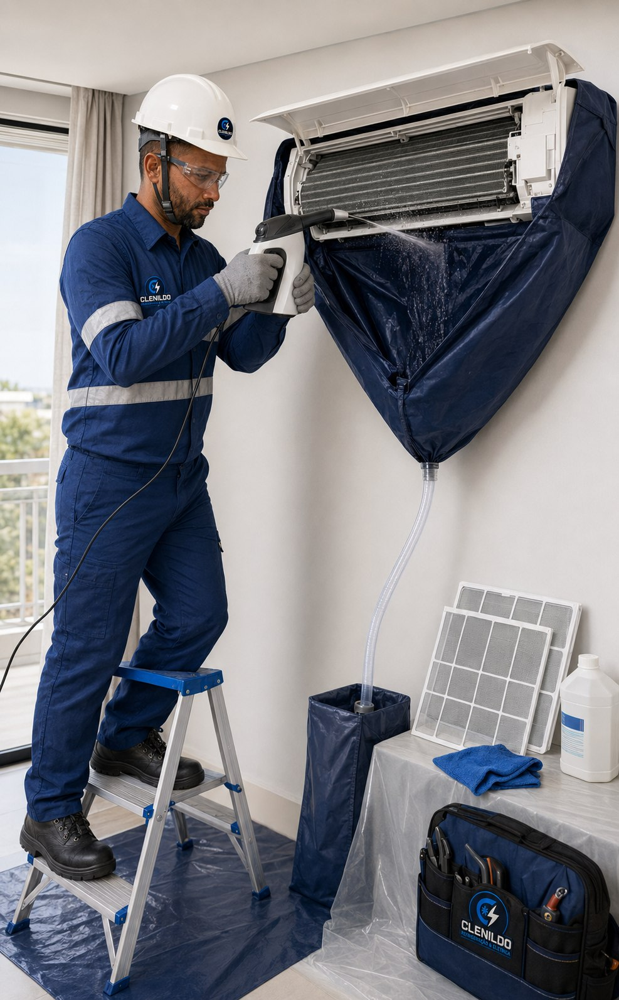

Qualidade do ar
Higienização de Ar-Condicionado
Limpeza técnica dos componentes internos para remover resíduos e contribuir para um ar mais limpo no ambiente.
Solicitar orçamento
Mais cuidado com o ar que circula.
A sujeira acumulada pode causar odores, reduzir o fluxo de ar e aumentar o esforço do equipamento.
A higienização é realizada com proteção do ambiente e atenção aos componentes sensíveis.